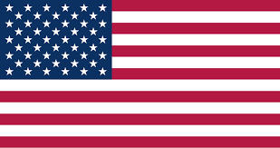
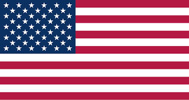

Lanzá al mercado tu producto, servicio o línea con acompañamiento estratégico y profesional.
El curso de Normas IRAM para la Sustentabilidad está dirigido a quienes buscan integrar criterios de sustentabilidad en sus proyectos, productos o servicios, cumpliendo con los estándares reconocidos a nivel nacional e internacional.
Está pensado para estudiantes, profesionales, emprendedores/as o equipos de trabajo que quieran comprender e implementar normas IRAM aplicadas al diseño, la producción responsable y la gestión sustentable.
A quienes quieran incorporar criterios de sustentabilidad respaldados por normativas IRAM en sus propuestas, ya sea para fortalecer su posicionamiento, cumplir con requerimientos institucionales o acceder a nuevos mercados más exigentes.
A quienes desarrollen proyectos, productos o servicios que busquen integrar criterios de sustentabilidad y alinearse con estándares normativos reconocidos, con el fin de mejorar su impacto ambiental, su posicionamiento y su valor frente a instituciones, mercados o comunidades.
A estudiantes, profesionales, diseñadores/as, emprendedores/as y equipos técnicos que deseen incorporar criterios de sustentabilidad en sus propuestas mediante el uso de normas IRAM. Ideal para quienes buscan mejorar el impacto ambiental, cumplir con requisitos institucionales o acceder a mercados más exigentes y responsables.